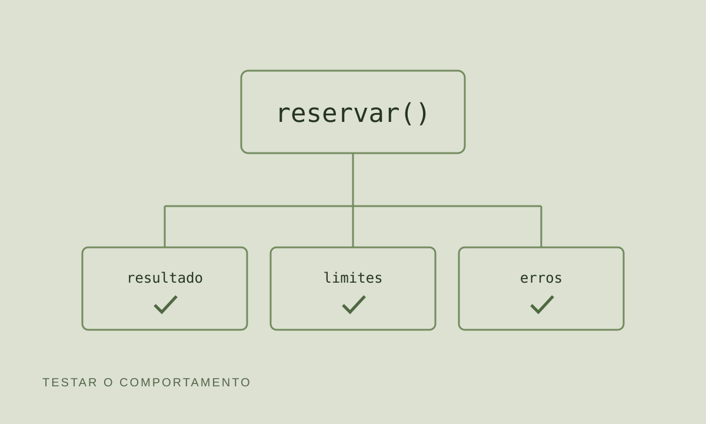
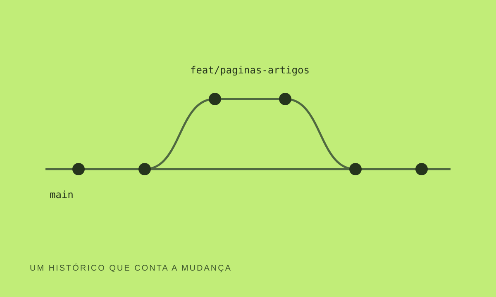
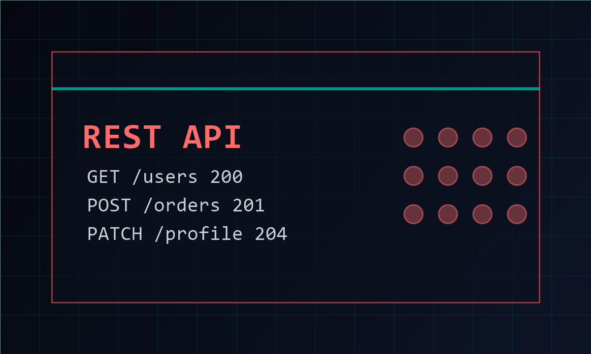
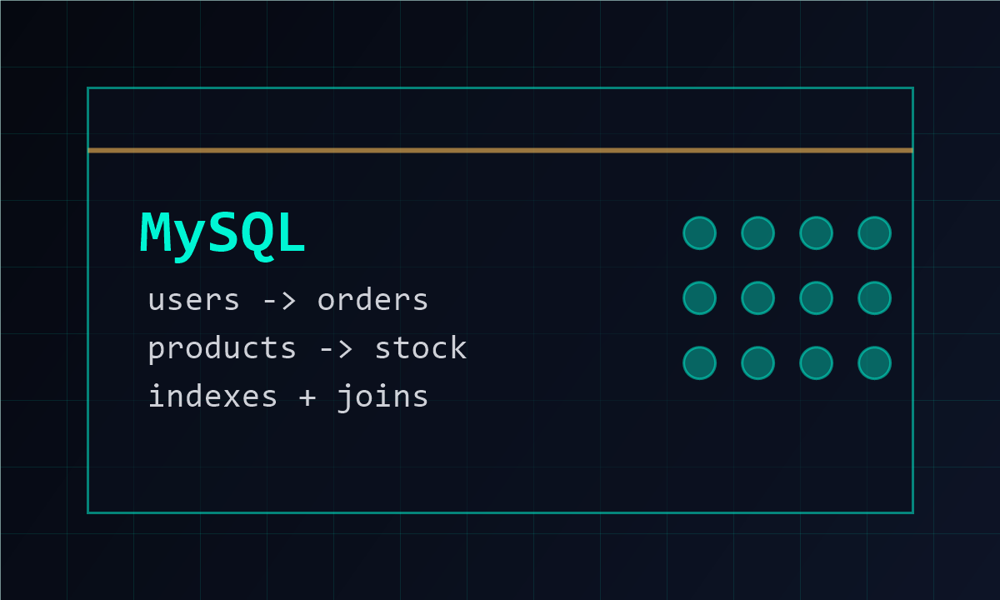

Testes em JavaScript: comece pela regra de negócio
Um exemplo de reserva de estoque para aprender a testar resultados, limites e erros usando o test runner nativo do Node.js.
Ler artigo 3 min de leituraNotas sobre código, decisões de desenvolvimento e o que vale compartilhar pelo caminho. JavaScript, interfaces e engenharia de software na prática.
8 artigos para explorar

Um exemplo de reserva de estoque para aprender a testar resultados, limites e erros usando o test runner nativo do Node.js.
Ler artigo 3 min de leitura
Como criar uma navegação expansível com botão nativo, estado acessível, foco visível e uma verificação manual simples.
Ler artigo 3 min de leitura
Um fluxo simples para inspecionar alterações, criar uma branch, preparar um commit e revisar exatamente o que será registrado.
Ler artigo 3 min de leitura
Nomes, funções e responsabilidades que deixam a intenção do código mais clara e facilitam a manutenção.
Ler artigo 2 min de leitura
Como reconhecer responsabilidades e evitar que componentes pequenos acumulem regras difíceis de manter.
Ler artigo 2 min de leitura
Rotas claras, validação e respostas consistentes para tornar uma API mais previsível para quem a consome.
Ler artigo 2 min de leitura
Entidades e relacionamentos que representam o domínio sem perder de vista as consultas da aplicação.
Ler artigo 2 min de leitura
Objetivos pequenos, prática e revisão para transformar estudo em conhecimento que pode ser aplicado.
Ler artigo 2 min de leitura
Curitiba e a capital do Parana e uma das cidades brasileiras mais reconhecidas por planejamento urbano, transporte publico, areas verdes e ecossistema de inovacao. Para quem trabalha com tecnologia, a cidade combina universidades, empresas, eventos e comunidades que fortalecem a formacao de profissionais de software.
No contexto deste blog, Curitiba aparece como base local para acompanhar tecnologia, carreira e desenvolvimento web com um olhar conectado ao mercado regional e nacional.
Imagem: Wikimedia Commons, Curitiba jardim botanico, Adelano Lazaro, dominio publico.